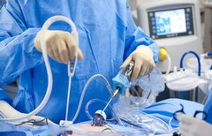

Рак толстой кишки (Колоректальный рак) — это злокачественная опухоль толстого кишечника, которая может быть в разных его отделах: слепой, ободочной, сигмовидной и прямой, а также в анальном канале.
Лапароскопическите вмешательства в последние десятилетия стали трендом в хирургии. И это не удивительно, так как у них есть неоспоримые преимущества перед традиционными вмешательствами – меньшая травматичность, более быстрый восстановительный период, меньший риск осложнений в послеоперационном периоде и косметический эффект.
В США, к примеру, ежегодно проводится более 600000 вмешательств по поводу заболеваний толстой кишки. Не всегда операция означает полное излечение от рака, но она может остановить прогрессирование опухолевого процесса, а также улучшить качество жизни пациента. Также подобные операции выполняются при осложненном дивертикулезе толстой кишки, мегаколон, осложненном хроническим колостазом, долихосигме, полипозе толстой кишки.
При традиционных открытых операциях пациент сталкивается с большей травматичностью, более длительным восстановительным периодом и более высоким риском осложнений. Кроме того, на животе после открытой операции остается длинный рубец.
В настоящее время лапароскопические операции стали проводиться и на толстой кишке. В зависимости от типа операции, пациент остается в стационаре всего несколько дней, и уже в скором времени может вернуться к прежней физической активности.
В большинстве случаев для лапароскопической резекции толстой кишки требуется 3-4 маленьких разреза для введения троакаров в брюшную полость.
В самом начале вводится троакар для закачивания в брюшную полость газа (воздуха), чтобы создать рабочее пространство для хирурга и инструментов. Далее вводятся троакары, через которые хирург в брюшную полость вводит камеру и миниатюрные инструменты.
Все манипуляции проводятся под контролем видеоизображения, получаемого на мониторе.
Для надрезов может применяться коагуляция.
При большом размере опухоли врач проводит частичную колэктомию. После этого проводится анастомоз – сшиваются участки пересеченной кишки. Помимо этого врач иссекает регионарные лимфоузлы, для последующего их гистологического исследования.
При технической невозможности соединения двух участков кишки один из них (дистальный) ушивается, а ближний (проксимальный конец) выводится на переднюю брюшную стенку. К выведенному концу (колостоме) подсоединяется калоприемник.
В некоторых случаях колостома бывает временной, пока не заживет дистальная часть толстого кишечника. Однако при полном удалении части толстой кишки колостома остается постоянно.
По большей части подготовка к лапароскопическому вмешательству такая же, как и при других операциях на органах брюшной полости и заключается в проведении очистительных клизм и других методах подготовки кишечника.
Обязательно проводятся исследования, такие как анализы крови, мочи, ЭКГ и УЗИ.
Если Вы принимаете какие-либо препараты, следует предупредить врача, а также анестезиолога.
В послеоперационном периоде могут, как и в случае традиционных оперативных вмешательств, встречаться осложнения. К ним относятся кровотечения, инфекция, парез кишечника, несостоятельность анастомоза.
Общий уровень осложнений, по различным данным, при лапароскопических вмешательствах на толстой кишке составляет 6 - 28,5%. Такие специфические осложнения как несостоятельность швов анастомоза наблюдаются в 0,94 - 3,9%, раневая инфекция – в 0,33-3,1%, а парез кишечника - в 2,5-3,14% наблюдений.
В целом, послеоперационный период короче, чем при открытой резекции толстого кишечника, и составляет 2 – 3 дня. После этого они могут быть выписаны домой.
Рекомендуется ранняя мобилизация для профилактики осложнений и снижения риска образования спаек в брюшной полости. В первое время следует придерживаться диеты, чтобы максимально щадить кишечник и дать нормально зажить анастомозу. Через 1 – 2 недели пациент уже может вернуться к обычной физической активности. Дренажи, остающиеся в ранах, удаляют через несколько дней, если по ним нет отделяемого.
Среди преимуществ лапароскопических вмешательств можно отметить такие:
Современные исследования показывают, что в первый год после лапароскопической резекции общее качество жизни у таких пациентов значительно лучше по сравнению теми, кто перенес традиционное открытое оперативное.
В арсенале хирургов сегодня имеются такие лапароскопические методы лечения рака прямой и толстой кишки как:
В некоторых случаях (редко) проведение лапароскопического вмешательства бывает невозможным по разным причинам. Это, например, выявление выраженного спаечного процесса в брюшной полости, невозможность адекватной визуализации внутренних органов, а также кровотечение из сосуда, которое требует срочной остановки.
Во всех этих случаях операционная бригада переходит на традиционное вмешательство, для чего проводится обычный разрез брюшной стенки. Из противопоказаний к лапароскопическому вмешательству также можно отнести пожилой возраст пациента, а также сопутствующие заболевания, которые могут повысить риск осложнений.